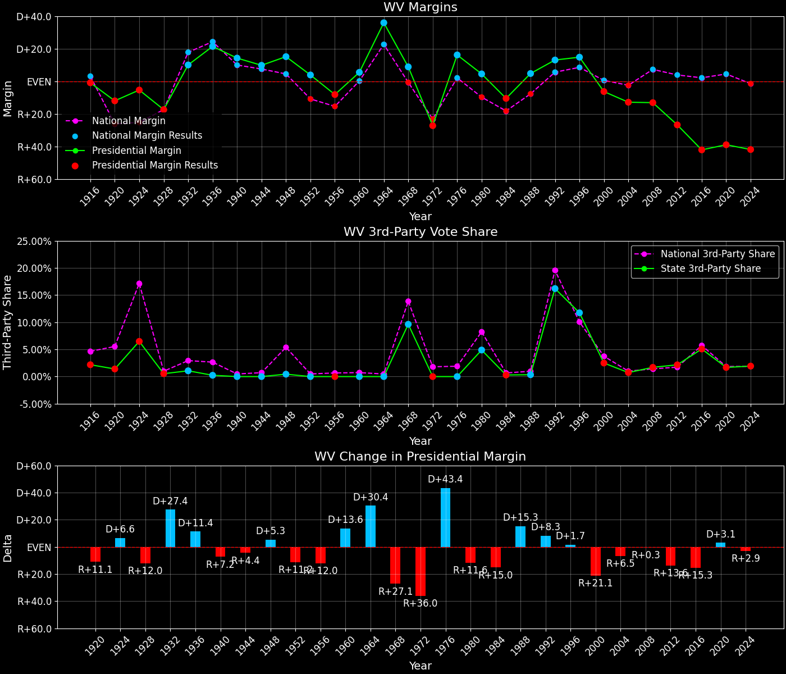
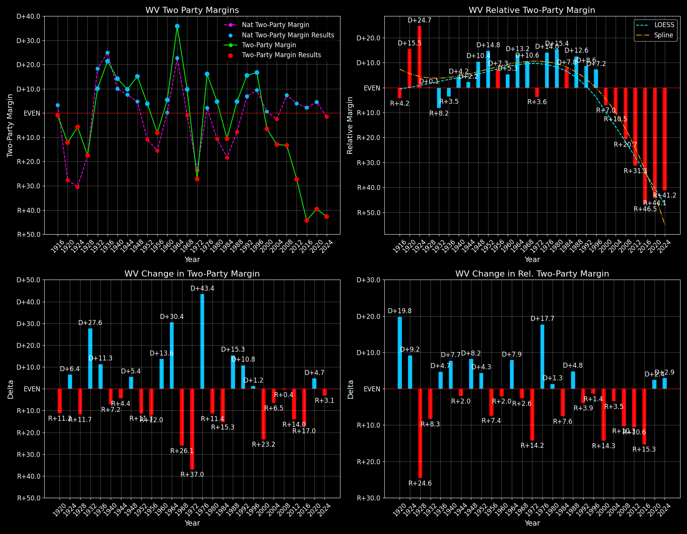

West Virginia (WV) — Statewide

Margins · 3P share · Pres. deltas

Relative margins · Relative 3P · Rel. deltas
West Virginia (WV) — Total Data
| Year | EVs | D | R | Margin | Rel. Margin | Nat. Margin | Margin Δ | Rel. Margin Δ | Nat. Margin Δ | Total votes |
|---|---|---|---|---|---|---|---|---|---|---|
| 1968 | 7 | 374,091(49.6%) | 307,555(40.8%) | D+8.8 | D+9.4 | R+0.6 | 754,206 | |||
| 1972 | 6 | 277,435(36.4%) | 484,964(63.6%) | R+27.2 | R+3.7 | R+23.5 | R+36.0 | R+13.1 | R+23.0 | 762,399 |
| 1976 | 6 | 435,864(58.1%) | 314,726(41.9%) | D+16.1 | D+13.9 | D+2.2 | D+43.4 | D+17.6 | D+25.7 | 750,590 |
| 1980 | 6 | 367,462(49.8%) | 334,206(45.3%) | D+4.5 | D+14.4 | R+9.9 | R+11.6 | D+0.5 | R+12.1 | 737,715 |
| 1984 | 6 | 328,125(44.6%) | 405,483(55.2%) | R+10.5 | D+7.6 | R+18.1 | R+15.0 | R+6.8 | R+8.2 | 735,097 |
| 1988 | 6 | 341,016(52.2%) | 310,065(47.5%) | D+4.7 | D+12.5 | R+7.7 | D+15.3 | D+4.9 | D+10.4 | 653,311 |
| 1992 | 5 | 331,001(48.4%) | 241,974(35.4%) | D+13.0 | D+7.4 | D+5.6 | D+8.3 | R+5.0 | D+13.3 | 683,677 |
| 1996 | 5 | 327,812(51.5%) | 233,946(36.8%) | D+14.7 | D+6.2 | D+8.6 | D+1.7 | R+1.2 | D+3.0 | 636,459 |
| 2000 | 5 | 295,497(45.6%) | 336,473(51.9%) | R+6.3 | R+6.8 | D+0.5 | R+21.1 | R+13.0 | R+8.0 | 648,274 |
| 2004 | 5 | 326,541(43.2%) | 423,778(56.1%) | R+12.9 | R+10.4 | R+2.5 | R+6.5 | R+3.6 | R+3.0 | 755,887 |
| 2008 | 5 | 304,127(42.6%) | 398,061(55.7%) | R+13.1 | R+20.4 | D+7.3 | R+0.3 | R+10.0 | D+9.7 | 714,653 |
| 2012 | 5 | 238,269(35.5%) | 417,655(62.3%) | R+26.8 | R+30.6 | D+3.9 | R+13.6 | R+10.2 | R+3.4 | 670,438 |
| 2016 | 5 | 188,794(26.2%) | 489,371(67.9%) | R+41.7 | R+43.8 | D+2.1 | R+14.9 | R+13.2 | R+1.8 | 721,231 |
| 2020 | 5 | 235,984(29.7%) | 545,382(68.6%) | R+38.9 | R+43.4 | D+4.4 | D+2.7 | D+0.4 | D+2.3 | 794,652 |
| 2024 | 4 | 214,309(28.1%) | 533,556(70.0%) | R+41.9 | R+40.3 | R+1.5 | R+2.9 | D+3.1 | R+6.0 | 762,582 |
Column explanations
- Year
- Election year.
- EVs
- Number of electoral votes allocated to this state or unit.
- D
- Number of votes for the Democratic candidate (raw count(pct%)).
- R
- Number of votes for the Republican candidate (raw count(pct%)).
- Margin
- Margin between the two major-party candidates, including third-party votes ((D - R)/total).
- Rel. Margin
- The presidential margin relative to the national presidential margin (Margin - Nat. Margin).
- Nat. Margin
- The national presidential margin for that year, including third-party votes ((D_total - R_total)/total_votes).
- Δ
- Change (delta) in the value from the previous election year. Blank if no data for previous year.
- Total votes
- Total voter turnout or ballots cast (when provided).
West Virginia (WV) — Third-Party Data
| Year | Other votes | 3rd Party Share | 3rd Party Nat. Share | 3rd Party Rel. Share |
|---|---|---|---|---|
| 1968 | 72,560(9.6%) | T+9.6 | T+13.6 | T-4.0 |
| 1972 | 0(0.0%) | T+0.1 | T-0.1 | |
| 1976 | 0(0.0%) | T+0.3 | T-0.3 | |
| 1980 | 36,047(4.9%) | T+4.9 | T+7.0 | T-2.1 |
| 1984 | 1,489(0.2%) | T+0.2 | T+0.1 | T+0.1 |
| 1988 | 2,230(0.3%) | T+0.3 | T+0.2 | T+0.1 |
| 1992 | 110,702(16.2%) | T+16.2 | T+19.2 | T-3.0 |
| 1996 | 74,701(11.7%) | T+11.7 | T+9.7 | T+2.1 |
| 2000 | 16,304(2.5%) | T+2.5 | T+3.7 | T-1.1 |
| 2004 | 5,568(0.7%) | T+0.7 | T+0.8 | T-0.1 |
| 2008 | 12,465(1.7%) | T+1.7 | T+1.4 | T+0.4 |
| 2012 | 14,514(2.2%) | T+2.2 | T+1.6 | T+0.5 |
| 2016 | 43,066(6.0%) | T+6.0 | T+5.5 | T+0.4 |
| 2020 | 13,286(1.7%) | T+1.7 | T+1.8 | T-0.2 |
| 2024 | 14,717(1.9%) | T+1.9 | T+1.9 | T+0.0 |
Column explanations
- Year
- Election year.
- Other votes
- Number of votes for third-party (other) candidates (raw count(pct%)).
- 3rd Party Share
- Share of the vote received by third-party (other) candidates.
- 3rd Party Nat. Share
- The national third-party share for that year (3P votes / total votes).
- 3rd Party Rel. Share
- Third-party share relative to the national third-party share (3P share - Nat. 3P share).

Two-party margins · relative · deltas
West Virginia (WV) — Two-Party Data
| Year | 2-Party Margin | 2-Party Nat. Margin | 2-Party Rel. Margin | 2-Party Margin Δ | 2-Party Nat. Margin Δ | 2-Party Rel. Margin Δ |
|---|---|---|---|---|---|---|
| 1968 | D+9.8 | R+0.7 | D+10.4 | |||
| 1972 | R+27.2 | R+23.6 | R+3.7 | R+37.0 | R+22.9 | R+14.1 |
| 1976 | D+16.1 | D+2.2 | D+13.9 | D+43.4 | D+25.8 | D+17.6 |
| 1980 | D+4.7 | R+10.6 | D+15.4 | R+11.4 | R+12.8 | D+1.4 |
| 1984 | R+10.5 | R+18.1 | D+7.6 | R+15.3 | R+7.5 | R+7.8 |
| 1988 | D+4.8 | R+7.8 | D+12.5 | D+15.3 | D+10.4 | D+4.9 |
| 1992 | D+15.5 | D+6.9 | D+8.6 | D+10.8 | D+14.7 | R+3.9 |
| 1996 | D+16.7 | D+9.5 | D+7.2 | D+1.2 | D+2.6 | R+1.4 |
| 2000 | R+6.5 | D+0.5 | R+7.0 | R+23.2 | R+8.9 | R+14.3 |
| 2004 | R+13.0 | R+2.5 | R+10.5 | R+6.5 | R+3.0 | R+3.5 |
| 2008 | R+13.4 | D+7.4 | R+20.7 | R+0.4 | D+9.8 | R+10.3 |
| 2012 | R+27.3 | D+3.9 | R+31.3 | R+14.0 | R+3.4 | R+10.5 |
| 2016 | R+44.3 | D+2.2 | R+46.5 | R+17.0 | R+1.7 | R+15.3 |
| 2020 | R+39.6 | D+4.5 | R+44.1 | D+4.7 | D+2.3 | D+2.4 |
| 2024 | R+42.7 | R+1.6 | R+41.1 | R+3.1 | R+6.1 | D+3.0 |
Column explanations
- Year
- Election year.
- 2-Party Margin
- Margin between the two major-party candidates, ignoring third-party votes ((D - R)/(D + R)).
- 2-Party Nat. Margin
- The national presidential margin for that year, including third-party votes ((D_total - R_total)/total_votes).
- 2-Party Rel. Margin
- The presidential margin relative to the national presidential margin (Margin - Nat. Margin).
- Δ
- Change (delta) in the value from the previous election year. Blank if no data for previous year.